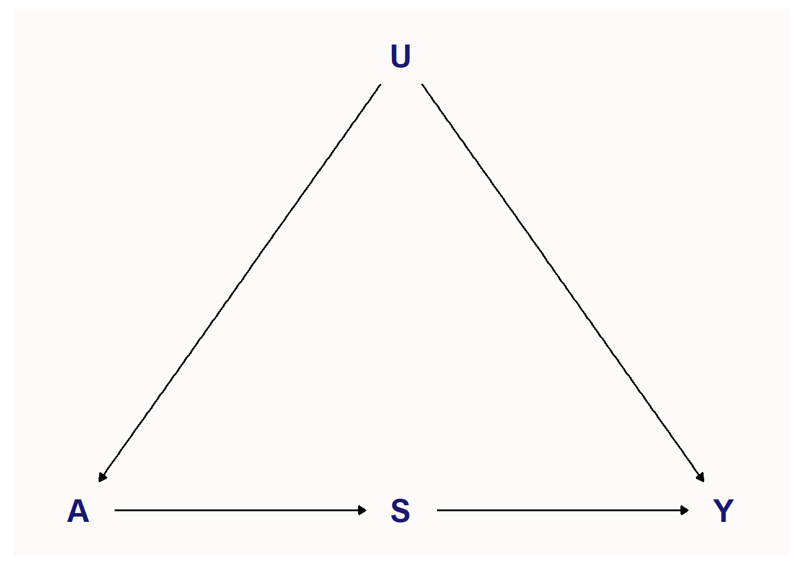

[conflicted] Will prefer dplyr::filter over any other package.
8.1 Motivation
scm_8.1<-list()scm_8.1<-within(scm_8.1, { coords <-list(x =c(A =1, S =2, U =2, Y =3),y =c(A =1, S =1, U =2, Y =1)) dag <-dagify( A ~ U, S ~ A, Y ~ S + U,coords = coords) plot <- fciR::ggp_dag(dag)})

Figure 8.1: Front-door Causal DAG
When \(S\) is a surrogate marker
\[
\begin{align*}
&\text{by double expectation rule} \\
E(Y \mid A) &= E_{S \mid A}(E(Y \mid A)) \\
&\text{by conditional expectation} \\
&= \sum_s E(Y \mid S=s, A) P(S=s \mid A) \\
&\text{because } Y \perp\!\!\!\perp A \mid S \\
&= \sum_s E(Y \mid S=s) P(S=s \mid A) \\
&\text{since there are no confounder for the effect of A on Y} \\
E(Y(a)) = E(Y \mid A=a) &= \sum_s E(Y \mid S=s) P(S=s \mid A=a)
\end{align*}
\]
sim1 <-function(n =1e4, seed =555) {set.seed(seed)# Generate the potential outcome Y(.,0) and Y(.,1) Ydot0 <-rbinom(n, size =1, prob =0.05) Ydot1 <-rbinom(n, size =1, prob =0.2)# let A depend on Y(.,1) probA <- (1- Ydot1) *0.1+ Ydot1 *0.8 A <-rbinom(n, size =1, prob = probA)# Generate the potential outcome S(0) and S(1) S0 <-rbinom(n, size =1, prob =0.05) S1 <-rbinom(n, size =1, prob =0.9)# S is a function of S0, S1 and A S <- (1- A) * S0 + A * S1# Y is a function of Y(., 0) and Y(., 1) and S Y <- (1- S) * Ydot0 + S * Ydot1data.frame(cbind(A, S, Y, Ydot0, Ydot1))}
sim1_df <-sim1()sim1.front <- fciR::frontdr_np(sim1_df, formula = Y ~ A + S,exposure.name ="A", surrogate.name ="S")sim1.front
term estimate std.err
1 EY0 0.05584704 NA
2 EY1 0.18536722 NA
3 RD 0.12952018 NA
4 RR 3.31919505 NA
5 RR* 1.15899210 NA
6 OR 3.84692084 NA